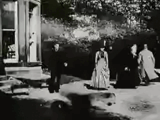
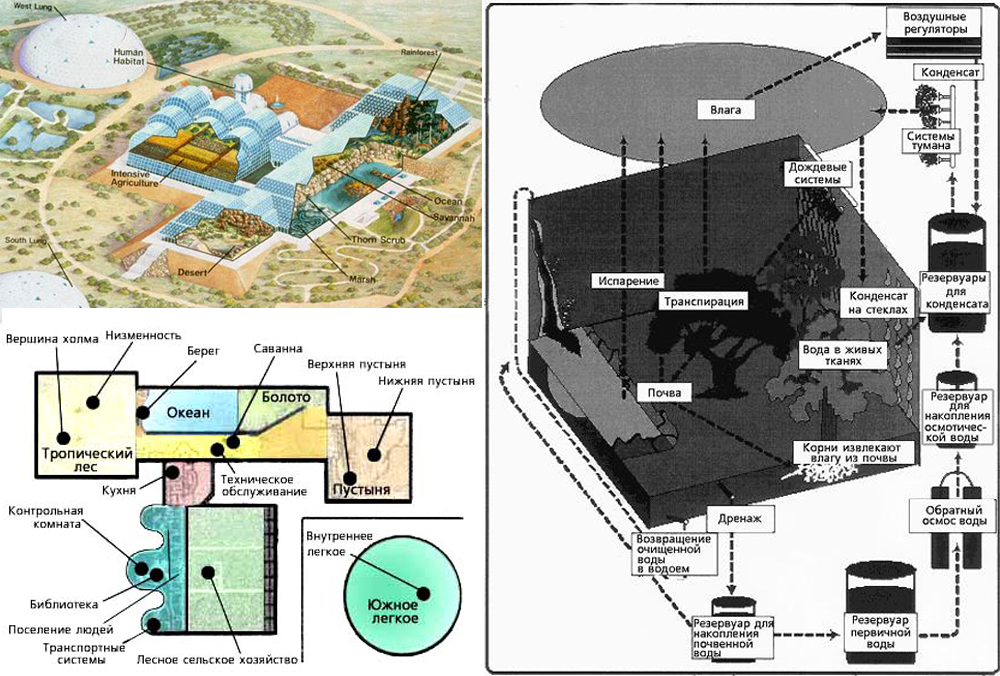

formulacialkovskogo
Продвинутый посвященный, однажды освобожденный от програмированого заговора а так же от мирских благо которые его поработали, совершает паломничество в сказочный обнесенный стеной церковный городок, где хирурги-психохирургри открывают ему или ей третью ноздрю и вновь освободить психическое зловоние окружающих и шизофрении.
Небесная механика результат движения небесных тел, результат одной общей причины
Сферическая астрономия занимается изучением взаимного расположения и дви-жения всех тех объектов, которые мы наблюдаем на небе
Философия иудаизма отрицает утверждение одной жизни, более того, жизнь на иврите имеет некоторые семантические свойства (в частности употребления в том же или похожем контексте душа и прочее) которые позволяют судить о том что сдесь, жизнь представляется исключительно по множественнос числе.
Все войны в мировой истории и в частности разрушительные войны последнего столетия- это просто игра (кино).А как же обстоит дело с разрушениями (Сталинград,Ленинград,Севастополь,Одесса и т.д.) в частности в период второй мировой войны. Мироздание подобно детской игрушке, это цилиндр, смотря в который и врасчая его, в нем цветные стеклышки, образуют различные геометрические фигуры (создаются различные картинки), только так. В зависимости от программы заданной богом и которая подтверждается например тем, на что указывали первосвященники в еврейской истории, Ленинград разрушенный днем, может быть к вечеру восстановлен, а к утру, опять разрушен,для продолжения сьемок фильма.И подтвердить это могут только те, кто был там, в блокадном Лениграде или противная сторона.
Многомерный калейдоскоп - вращая его, части одного среза 4-х и более мерного пространства заменяют частями другого, и получается, что - разрушенный город на какой-то момент оказывается в другом «измерении» (измерение оно только для нас, для существ высших порядков это всё равно что линии или точки)
Всё это иллюзия, перевернутый мир. Калейдоскоп, как повернуть так и будет. Сегодня Ленинград разрушен , в целом находится в состоянии упадка (жду продолжения демагогии с нетерпением, через 10 лет люди будут есть резину, а маршал давить сапогом и жрать ромовые бабы) завтра он цел и невредим и воспрял дух comunизма - transhumanism.inc - временно пространственный христиано-арийский элемент и семитских религий, не существует времени, все зависит от того куда смотреть.
Все зависит от положения смотрящего на объект. Электрон может быть точкой может быть линией, может быть там а может быть тут, никто не может предсказать его положение в пространстве, так как для него в квантовой механике не существует ни пространства ни времени, они есть только в нашей голове, в иллюзии. Мир - иллюзия созданная коллективным сознанием, и он существует только потому что все верят в то что он есть, на самом деле его нет. Это все реинкарнации одной сути проживающей миллиарды вариантов в миллиардах тел думающих что они индивидуальны и разделены, но на самом деле не существует тел, это всего лишь набор постоянно движущихся атомов (между которыми расстояния сравнимые с расстояниями между самими далёкими галактиками в миллиарды световых лет ) пронизанных одним сознанием.
Первый блок
Футбольный мяч как голова человека.... Но одно отличие - По футбольному мячу бьют ногой, а по человеческой голове молотком
 dad2031deathworld.gif
ТПереход живого разумного
существа из одного мира в более тонкий мир
возможен только с потерей плотного тела и
только с развитием все более высокой
духовности. Поэтому существует так
называемый Золотой Путь Духовного
Развития, который имеет свои
закономерности, связанные, в первую
очередь, с доступностью знаний .

Текст для третьего блока.


Когда же оружие притупится и острия обломаются, силы подорвутся и средства иссякнут, князья, воспользовавшись твоей слабостью, поднимутся на тебя. Пусть тогда у тебя и будут умные слуги, после этого ничего поделать не сможешь.
{kind=link}